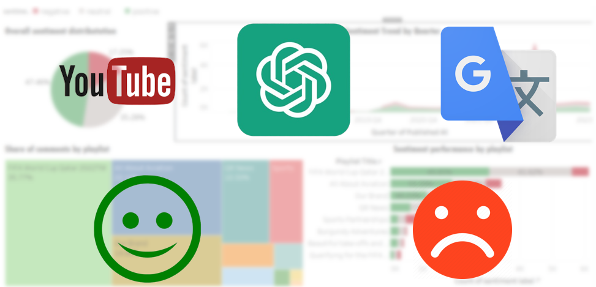
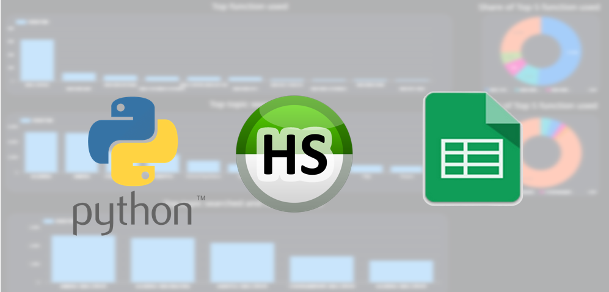
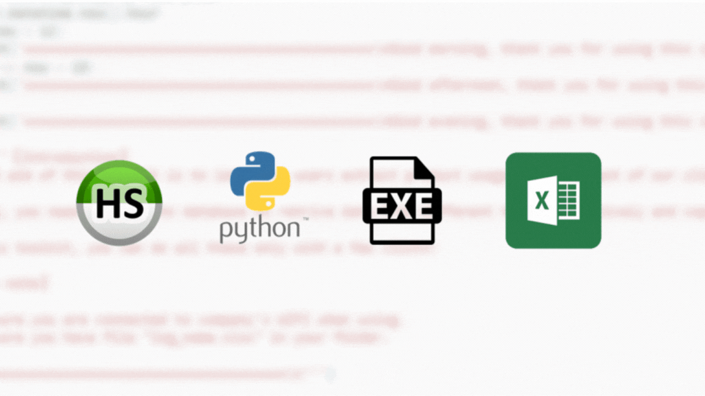
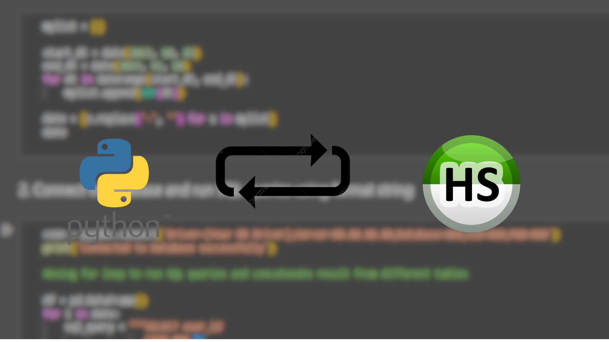

Qatar Airways YouTube Comment Analysis

Main tools Used:
#Python #YouTube Data API #Google Translate API #nltk #Open AI API #Tableau
Project Overview:
In this project, I scraped top-level comments from Qatar Airways' YouTube channel using the YouTube Data API. I performed semi-structured data handling, cleaned and transformed data from multiple tables, and translated all comments to English with the Google Translate API.
Next, I employed the NLTK package for sentiment analysis and text-based data tokenization in Python. Meanwhile, ChatGPT was utilized to classify videos into additional genres for deeper analysis.
Finally, I crafted interactive dashboards and stories on Tableau to visualize key metrics and insights, providing stakeholders with immediate access to vital information and business recommendations.
Automation for B2B Dashboard using Google Sheet API

Main tools Used:
#Python #Google sheets API #pyodbc #SQL #Looker Studio
Project Overview:
As an adept analyst at a B2B SaaS company, I optimized product usage analysis by implementing an automated data flow. Leveraging the Google Sheets API, I established a seamless process for running multiple SQL queries, data cleaning, and updating real-time product usage data.
This strategic approach guarantees that our dataset consistently reflects the latest two months, facilitating effortless comparisons and empowering us to discern and respond to evolving client product usage trends with precision.
Automatic B2B SaaS client usage report generator

Main tools Used:
#Python #pyodbc #xlsxwriter #pyinstaller #SQL
Project Overview:
In this project, I utilized Python to automate the routine tasks of extracting data from multiple database tables, data processing, and data analysis.
The outcome is an intuitive executable file, transforming complex procedures into a seamless one-click solution, which empowers non-technical colleagues to complete these tasks effortlessly, obtaining the desired data in Excel format promptly.
Automatic B2B SaaS client usage report generator
Main tools Used:
#Python #pyodbc #xlsxwriter #pyinstaller #SQL
Project Overview:
In this project, I utilized Python to automate the routine tasks of extracting data from multiple database tables, data processing, and data analysis.
The outcome is an intuitive executable file, transforming complex procedures into a seamless one-click solution, which empowers non-technical colleagues to complete these tasks effortlessly, obtaining the desired data in Excel format promptly.
Adding SQL Queries in For Loop in Python

Main tools Used:
#Python #pyodbc #SQL
Project Overview:
In my daily tasks, I frequently extracted webpage visitor data spanning an extended period, like one month, from our database. However, as each day's data was stored in a separate table, performing SQL queries to union all 30 tables at once was impractical.
To streamline this process, I developed a Python-based for loop integrated with SQL queries. This not only substantially decreased the processing time but also required minimal variable adjustments for different search queries.